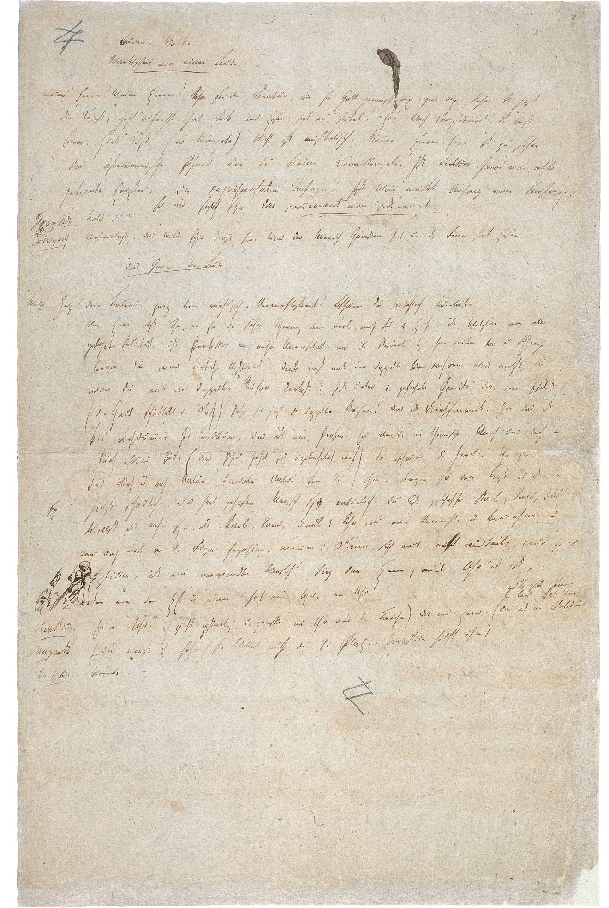

In einem Zimmer im Zürcher Niederdorf stirbt Georg Büchner. Er ist 23 Jahre alt, Schriftsteller und Naturforscher. Für seine Dissertation über das Nervensystem der Barbe hat er Fische seziert und feinste Hirn- und Rückenmarksnerven freigelegt. Auch in Zürich arbeitet er an frischen Präparaten – und an einem Drama. Nun ist er an Typhus gestorben – möglicherweise hat er sich beim Präparieren angesteckt.
Zurück bleibt Woyzeck: beschriebene Blätter, überarbeitete Szenen, mehrere Entwürfe. Keine abgeschlossene Endfassung. Wie wird daraus eine Geschichte?
Sieh dir Büchners Grab an. Was hat er hinterlassen?
HEUTE · GERMANIAHÜGEL, ZÜRICH
Ein Grab. Und keine letzte Fassung.
Büchners Leben ist zu Ende. Die Arbeit an seinem Text geht weiter.
Zunächst wird er auf dem Friedhof «Krautgarten» bestattet. Seit 1875 liegt sein Grab auf dem Germaniahügel. Auch dieser Ort ist Teil einer Geschichte, die nicht einfach stillsteht.
Sieh dir den Ort an. Dann gehen wir zurück zu dem, was Büchner hinterlassen hat: einem Text, dessen Verbindungen du selbst untersuchen wirst.
Verfolge rückwärts, wie Flucht, Forschung und Schreiben zusammenkommen.
VOM TOD ZURÜCK ZUM SCHREIBEN
Was führte ihn in dieses Zimmer? Und was bleibt auf den Blättern?
Wir kennen das Ende seines Lebens. Gehen wir zurück: zu einem jungen Forscher, der in Zürich eine Zukunft sucht, und zu einem Autor, dessen Text mitten in der Arbeit abbricht.
FEBRUAR 1837 · DAS ENDE
Der Tod unterbricht die Arbeit.
Anfang Februar erkrankt Büchner schwer. Am 19. Februar stirbt er in der Spiegelgasse 12; seine Verlobte Wilhelmine Jaeglé ist bei ihm. Die als Typhus oder „Nervenfieber“ bezeichnete Krankheit beendet sein Leben. Der genaue Ansteckungsweg ist nicht gesichert.
Das Drama bleibt Fragment. Wenn wir es lesen, begegnen wir einem abgebrochenen Arbeitsprozess: Szenen, Varianten, Streichungen. Eine endgültige Anordnung hat Büchner nicht hinterlassen.
Büchner stellt Präparate für seine Lehrveranstaltungen her, erforscht Körper und unterrichtet. Daneben arbeitet er an Woyzeck. Patrick Fischers Georg B. erzählt von nächtlicher Schreibarbeit, knappen finanziellen Mitteln und einem unsicheren Aufenthaltsstatus. Forschung und Literatur teilen sich seine Zeit. Die Präparate sind dabei sein tägliches Arbeitsmaterial: An ihnen macht er anatomische Zusammenhänge für seine Studierenden sichtbar.
Sein französisch verfasstes Mémoire sur le système nerveux du barbeau – die Untersuchung zum Nervensystem der Barbe – eröffnet ihm eine wissenschaftliche Laufbahn. Die Universität Zürich promoviert ihn am 3. September 1836 zum Dr. phil.; im Oktober zieht er in die Stadt. Am 5. November hält er seine Probevorlesung Über Schädelnerven. Danach lehrt er als Privatdozent für Naturgeschichte. Zürich ist Arbeitsort und Zuflucht zugleich.
Wegen seiner politischen Tätigkeit und seiner Beteiligung am Hessischen Landboten droht Büchner die Verhaftung. Er flieht aus Hessen nach Strassburg. Dort forscht und schreibt er, bevor er nach Zürich geht. Woyzeck entsteht unter den Bedingungen von Verfolgung, Exil und beruflichem Aufbruch.
Unterscheide die historische Person, das Gutachten und Büchners Figur.
LEIPZIG · EIN HISTORISCHER KRIMINALFALL
Vor der Figur steht ein Mensch.
Johann Christian Woyzeck ist 41 Jahre alt, ehemaliger Soldat und arbeitsloser Perückenmacher, als er 1821 Johanna Christiane Woost tötet. Aus dem Fall entsteht eine Debatte: Wie sind Tat, psychischer Zustand und Verantwortung zu beurteilen?
Die Tat
Woyzeck ersticht Woost in der Leipziger Sandgasse. Sie wird in den Akten als seine zeitweilige Geliebte bezeichnet.
Die Begutachtung
Der Arzt Johann Christian August Clarus untersucht Woyzeck. In zwei Gutachten beurteilt er ihn als zurechnungsfähig. Hinweise auf ungewöhnliche Wahrnehmungen führen bei ihm nicht zu einem entlastenden Urteil.
Die Hinrichtung
Nach Einsprüchen und weiteren Prüfungen wird Woyzeck auf dem Leipziger Marktplatz hingerichtet. Der Fall wird auch danach medizinisch und juristisch diskutiert.
Nach der Prozesschronik und der Clarus-Einführung der Marburger Ausgabe, Band 7.2, S. 257, 350 und 353–354. Chronik ab 1821 lesen · Hinrichtung 1824
DAS QUELLENDOKUMENT
Ein Gutachten urteilt.
Clarus wählt Aussagen und Beobachtungen aus und gewichtet sie im Hinblick auf die Zurechnungsfähigkeit. Seine Darstellung vermittelt uns Woyzecks Leben aus einer bestimmten Perspektive. Sie ist eine historische Quelle, die selbst untersucht werden muss.
Büchners Woyzeck ist eine literarische Figur. Marie ist nicht einfach ein anderer Name für Woost. Das Drama verbindet und verändert Material; es lässt Figuren sprechen und setzt sie in soziale Beziehungen. Die Marburger Ausgabe dokumentiert neben Clarus auch weitere Kriminalfälle als Quellen.
Wie wird aus dem historischen Woyzeck eine Bühnenfigur?
Vergleiche eine Aussage von Clarus mit einer Stelle, an der Woyzeck selbst spricht. Wie beschreibt der Arzt ihn? Wie erlebst du ihn im Drama? Nenne die beiden Stellen.
Dein Vergleich wird unter «Meine Notizen» gespeichert. Du kannst ihn später herunterladen.
Quellen und weiterführender Zugang
Arbeitsgrundlage sind die Dokumente und Kommentare der Marburger Ausgabe. Das Büchnerportal bietet einen weiteren Zugang zum Werk und seinen Quellen.
Unterscheide Dissertation, Probevorlesung und Präparationspraxis.
DER PRÄPARIERTISCH · FORSCHUNG, EXISTENZ, MÖGLICHES RISIKO
Die Nerven eines Fisches. Die Zukunft eines Forschers.
Die Barbe ist ein Karpfenfisch. An ihrem Körper untersucht Büchner, wie Gehirn, Rückenmark und Nerven zusammenhängen. Diese Arbeit führt ihn nach Zürich. Die fortgesetzte Arbeit an frischen Fischpräparaten könnte auch mit der Krankheit zusammenhängen, an der er dort stirbt.
STRASSBURG · DISSERTATION
Das Nervensystem der Barbe
Im Mémoire sur le système nerveux du barbeau beschreibt Büchner den Verlauf und die Verzweigungen von Nerven. Die Hirn- oder Schädelnerven gehen vom Gehirn aus, die Rückenmarksnerven vom Rückenmark. Er vergleicht seine Befunde mit anderen Untersuchungen und fragt nach dem gemeinsamen Bauplan der Wirbeltiere. Die in Strassburg erarbeitete Abhandlung wird zur Grundlage seiner Zürcher Promotion.
Am 5. November 1836 führt Büchner seine Überlegungen in der Probevorlesung weiter. Er fragt nach den Zusammenhängen im Bau der Tiere und danach, wie anatomische Formen erklärt werden können. Dissertation und Probevorlesung sind zwei unterschiedliche Texte: Die erste erschliesst ihm den Doktorgrad, die zweite gehört zum Weg in die Privatdozentur.
Büchner arbeitet mit möglichst frischen Fischen und einer Lupe. Weisse Nervenfäden lassen sich dann besser vom rötlichen Fleisch unterscheiden. Häufig seziert er unter Wasser, um feine Gewebe und ihre Lage erkennen zu können.
Verbindungen freilegen
Er verfolgt Nervenbahnen, legt Verzweigungen frei und vergleicht verschiedene Fische. Was sichtbar wird, hängt auch davon ab, wie sorgfältig er präpariert.
Zeichnen und beschreiben
Mit Zeichnungen und Beschreibungen hält Büchner fest, was er beim Präparieren erkennt. Andere Forschende können seine Beobachtungen so nachvollziehen.
Vom Fischkörper zum Textkörper. Beim Lesen schauen wir ebenso genau hin. Was steht tatsächlich da? Was vermuten wir darüber hinaus? An Büchners Handschrift kannst du das gleich selbst ausprobieren.
Prüfe an den Filmen, wie Beobachtungen und Erklärungen zusammenhängen.
ANSEHEN UND BEOBACHTEN
Die Barbe im Film.
Beobachte zuerst das lebende Tier. Vergleiche danach, wie die Filmbeiträge Büchners Forschung und die Arbeit am Präparat zeigen.
Die Barbe in Bewegung · Clip aus Zurichstories, dort nachgewiesen als «Die Barbe – eine anspruchsvolle Fischart». Film separat öffnen
VOM LEBENDEN TIER ZUM PRÄPARAT
Bevor der Körper untersucht wird.
Hier schwimmt das Tier, dessen Nerven Büchner untersucht. Am Präpariertisch wird sein Körper geöffnet, gegliedert und gezeichnet.
Beobachte im Film zunächst den ganzen Fisch. Was lässt sich von aussen erkennen? Welche Zusammenhänge werden erst durch einen Eingriff sichtbar?
Film mit der Wiedergabetaste starten. Alle Filme lassen sich pausieren und im Vollbild ansehen.
FORSCHUNG ANSEHEN
Was Büchner am Fisch erkennt.
Zwei Ausschnitte aus dem 3sat-Film Büchner-Protokoll. Auf den Spuren Georg Büchners, aus Patrick Fischers Georg B. auf Zurichstories.
Der Blick auf Büchners Forschung · 0:33Wie wird die Arbeit des jungen Naturforschers heute eingeordnet? Film separat öffnenAm geöffneten Fischkörper · 1:33Achte auf die Handgriffe und die Erklärung der Nervenbahnen. Welche Beobachtung trägt welche Schlussfolgerung? Film separat öffnen
Quelle: 3sat, Büchner-Protokoll; Ausschnitte wie in Patrick Fischers Georg B.: Präparate und Zeichnungen. Die Aufnahmen zeigen heutige Forschung und Präparation, keine historischen Filmaufnahmen Büchners.
Prüfe, was Ernährung, Geld und ärztliche Deutungsmacht im Drama miteinander verbindet.
BEIM DOKTOR · KÖRPER, GELD UND WISSENSCHAFT
Zwei Groschen. Ein Körper als Versuch.
Woyzeck erhält im Drama Geld für ein Experiment. Der Doktor kontrolliert seine Ernährung und verlangt, dass er seine Körperfunktionen beherrscht. Die Erbsendiät gehört zu dieser Versuchsanordnung – und zu einem Verhältnis ungleicher Macht.
«Hat er schon seine Erbsen gegessen, Woyzeck?»
Der Doktor, H4,8 · Marburger Ausgabe 7.2, S. 27, Z. 7.
AM DRAMENTEXT BELEGBAR
Bezahlt, kontrolliert, benannt.
In H4,8 verweist der Doktor auf die tägliche Bezahlung und eine schriftliche Vereinbarung. Er fragt nach den Erbsen, verlangt eine Urinprobe und bewertet Woyzecks auffällige Wahrnehmungen als wissenschaftlich interessanten Fall. Dafür stellt er eine Zulage in Aussicht. Woyzeck wiederum erklärt, das eingesparte Verpflegungsgeld gehe an seine Partnerin.
Die Marburger Ausgabe ordnet die reine Erbsendiät in die zeitgenössischen Nahrungsersatzexperimente ein. In Frankreich und England wurde untersucht, ob günstigere Nahrung teurere Lebensmittel ersetzen könnte – für arme Bevölkerungsschichten und für Heere.
Der Kommentar nennt unter anderem Versuche mit Gelatine und Hülsenfrüchten von Jean-Sébastien de Fontenelle sowie Untersuchungen von Henri Milne Edwards. Das ist ein möglicher Anregungszusammenhang für Büchner.
Stelle «Beim Doktor» zuerst vor «Freies Feld», dann dahinter. Wie erklärst du dir Woyzecks Angst in der jeweiligen Folge? Nenne passende Stellen aus beiden Szenen. Nur weil eine Szene vor der anderen steht, muss sie noch nicht deren Ursache zeigen.
Deine Antwort wird gespeichert. Halte fest, welche Textstellen für deine Erklärung sprechen.
Schau dir an, warum du die Szenen hier selbst anordnest.
WARUM WIR SO GENAU HINSEHEN
Autopsie eines Textkörpers.
Büchner legt beim Präparieren Nerven frei und untersucht, wie sie zusammenhängen. Bei seinem Drama schauen wir ähnlich genau hin: Was steht auf den Blättern? Was hat er gestrichen oder ergänzt? Und wie könnten die Szenen zusammenpassen? Deshalb sprechen wir hier von einer «Autopsie» des Textes.
Genau hinsehen
Was wird gesagt oder getan? Wer spricht, wer schweigt? Trenne deine Beobachtung von dem, was du schon daraus schliesst.
Szenen zusammenstellen
Setze zwei Szenen hintereinander. Wirkt die erste wie eine Erklärung für die zweite? Oder widersprechen sie sich?
Die Reihenfolge ändern
Verschiebe eine Szene und vergleiche A mit B. Welche Deutung trägt der Text? Welche hast du erst durch die Reihenfolge nahegelegt?
Deine Erklärung begründen
Notiere, welche Textstellen deine Erklärung stützen. Gibt es auch Stellen, die nicht dazu passen? Was bleibt für dich offen?
Deshalb montierst du.
Steht der Besuch beim Doktor vor der Feldszene, liest du Woyzecks Angst vielleicht als Folge des Experiments. Steht er danach, kann die Angst schon vorher bestanden haben. Mit denselben Szenen entstehen andere Erklärungen. Probiere aus, welche dich überzeugt, und begründe sie am Text.
Vertiefung: Was die Ausgabe an den Entwürfen nachweist
WAS AM TEXTKÖRPER NACHWEISBAR IST
Schreiben hinterlässt materielle Spuren.
Die Marburger Ausgabe unterscheidet die Entwurfsgruppen H1–H4. Ihr Editionsbericht ordnet H1/H2 Strassburg und H3/H4 Zürich zu, gestützt auf Tintenvergleiche. Papieranalysen grenzen die Strassburger Arbeit näher ein. Die genaue Entstehung wird also aus Befunden erschlossen.
Büchner stirbt, bevor er das Drama fertigstellen kann. Wer daraus einen lesbaren Text zusammenstellt, muss deshalb Entscheidungen treffen. Die Karten hier fassen die Szenen zusammen. Mit ihnen kannst du selbst verschiedene Reihenfolgen ausprobieren.
Entziffere zuerst selbst, bevor du Umschrift und Erläuterungen aufdeckst.
AM ORIGINAL UNTERSUCHEN · H1, FOLIOHANDSCHRIFT I, SEITE 1
Was Büchner auf dem Blatt verändert.
Hier liegt eine Originalseite vor dir. Wähle eine Textspur und untersuche zuerst nur das Original. Halte einen Entzifferungsversuch und eine Vermutung zur Überarbeitung fest. Danach kannst du die Umschrift und die Erläuterung dieser Stelle aufdecken. Schreib auch auf, wenn du etwas nicht sicher lesen kannst.
OriginalhandschriftFoliohandschrift I · p. 1 · MBA 7.1, S. 5

Der farbige Rahmen stammt von dieser Lernplattform. Er ist kein Bestandteil der Handschrift. Im vergrösserten Bild kannst du scrollen.
Beschreibe, was du im Rahmen erkennst. Du musst die Stelle nicht vollständig lesen können.
Notiere zuerst deinen Entzifferungsversuch und deine Vermutung. Auch Unsicherheiten kannst du festhalten.
STREICHUNG · H1,1 · ZEILE 6
Ein Wort bleibt als Spur zurück.
… Ist Liebling favori von alle gekrönte Häupter. …
Was die Ausgabe zeigt: Die Ausgabe entziffert „Liebling“ als gestrichenes Wort. „favori“ bleibt im Text stehen. Die getilgte Form ist Teil des Schreibprozesses, auch wenn sie in einer glatten Lesefassung verschwindet.
Auszug ohne die Streichung lesen
… Ist favori von alle gekrönte Häupter. …
Was bewirkt das französische „favori“ in der Rede des Marktschreiers? Welche Deutung kannst du mit dem sprachlichen Umfeld begründen?
DEINE UNTERSUCHUNG · TEXTSPUR B · ZEILE 7
Was kannst du entziffern?
Beschreibe, was du im Rahmen erkennst. Du musst die Stelle nicht vollständig lesen können.
Notiere zuerst deinen Entzifferungsversuch und deine Vermutung. Auch Unsicherheiten kannst du festhalten.
STREICHUNG · H1,1 · ZEILE 7
Auch der Satzansatz wird bearbeitet.
… Ist Man mackt Anfang von Anfang.
Was die Ausgabe zeigt: Vor „Man“ steht ein gestrichenes „Ist“. Die Umschrift hält diese verworfene Form fest. „mackt“ ist die Schreibweise des Auszugs und wird hier nicht stillschweigend verbessert.
Auszug ohne die Streichung lesen
… Man mackt Anfang von Anfang.
Was verändert sich im Satzbau? Trenne die beobachtbare Korrektur von deiner Vermutung darüber, weshalb Büchner sie vorgenommen hat.
DEINE UNTERSUCHUNG · TEXTSPUR C · ZEILEN 8–9
Was kannst du entziffern?
Beschreibe, was du im Rahmen erkennst. Du musst die Stelle nicht vollständig lesen können.
Notiere zuerst deinen Entzifferungsversuch und deine Vermutung. Auch Unsicherheiten kannst du festhalten.
NACHTRAG · H1,1 · ZEILEN 8–9
Aus einer Rede wird eine Begegnung.
Soldat Willst du? Margreth Meinetwegen. Das muß schön Dings seyn. Was der Mensch Quasten hat u. die Frau hat Hosen.
Was die Ausgabe zeigt: Die Marburger Ausgabe bezeichnet diesen Dialog in der editorischen Erläuterung zu 1,8f als Späteintrag. Die Ergänzung ist auf dem Blatt am linken Rand und in der folgenden Zeile zu finden. Der frühe Entwurf nennt die Figur hier Margreth; dieser Name bleibt im Auszug erhalten.
Was verändert sich, wenn der Soldat und Margreth hier miteinander sprechen? Lies die Stelle einmal ohne den ergänzten Dialog. Was fehlt dir dann?
gestrichen · getilgter Textergänzt · nachgetragener Text
Didaktisch vereinfachte Auszüge nach der differenzierten Umschrift, keine vollständige diplomatische Transkription. Historische Schreibweisen bleiben erhalten; Zeilenfall und editorische Sonderzeichen sind vereinfacht. „…“ zeigt Auslassungen.
Bild und Umschrift: Marburger Ausgabe Digital, Woyzeck, Band 7.1.
Faksimile S. 5, Foliohandschrift I, p. 1; differenzierte Umschrift S. 4, H1,1, Z. 6–9, mit editorischen Erläuterungen. Das Bild wurde aus den bereitgestellten Deep-Zoom-Kacheln ohne Retusche zusammengesetzt.
Jetzt zu den Szenen: Du hast gesehen, wie Büchner einzelne Wörter und Sätze überarbeitet. Jetzt stellst du ganze Szenen zusammen. Dabei entscheidest du selbst, welche aufeinanderfolgen sollen. Deine Reihenfolge ist ein Vorschlag, den du am Text begründest.
Baue A und B. Begründe deine Deutung mit Textbelegen.
ORDNUNG IST EINE ENTSCHEIDUNG
Deine Montage.
Wähle drei bis fünf Szenen und speichere ihre Reihenfolge als A. Verschiebe dann eine Szene und speichere die neue Reihenfolge als B. An den markierten Übergängen kannst du erklären, was du jetzt anders verstehst.
Lies noch einmal und achte besonders auf Marie und ihr Kind.
DEINE DEUTUNG AUF DIE PROBE STELLEN
Ein anderer Blick.
Vielleicht hast du bisher vor allem auf Woyzeck geachtet. Schau jetzt auch darauf, was Marie erlebt und wie die Figuren dieselbe Situation unterschiedlich wahrnehmen.
01 / WAHRNEHMUNG
Wessen Wirklichkeit?
WAS NIMMT WOYZECK WAHR?
Im Feld sieht Woyzeck etwas Bedrohliches; Andres reagiert anders. Beim Doktor wird Woyzeck untersucht und beurteilt. Vergleiche, was Woyzeck selbst erzählt und was andere über ihn sagen.
SO GEHST DU VOR
Wähle eine der drei Karten. Lies die Stelle und notiere, was dir auffällt. Öffne danach den Vorschlag und vergleiche ihn mit deiner Erklärung.
Marie hat eigene Wünsche, Sorgen und Beziehungen. Was erfährst du darüber? Was geht verloren, wenn du sie nur als Woyzecks Geliebte betrachtest?
NOCH EINMAL AUF DEINE SZENEN SCHAUEN
Wähle Marie oder ihr Kind. Was erfährst du in deiner Szenenfolge über diese Person? Würdest du eine Szene ergänzen oder verschieben, um mehr von ihr zu zeigen? Begründe deinen Vorschlag.
Woyzecks Lebensumstände helfen uns, sein Handeln zu verstehen. Sie entschuldigen den Mord nicht.
Figurengespräche als Gedankenexperiment
Figurengespräche
Diese simulierten Antworten entstehen aus vorgegebenen Textbausteinen und deiner aktuellen Fassung. Sie sind keine Büchner-Zitate. Welche Aussage kannst du am Text belegen, welche musst du zurückweisen?
Bereit für Spracheingabe.
Wähle eine Figur und starte ein Gespräch.
Wie verstehst du Woyzeck jetzt?
Was hat dich beim erneuten Lesen überrascht? Notiere eine Textstelle und erkläre, ob du deine Szenen jetzt anders anordnen würdest.
Sichere deine erste Anordnung als A. Ändere gezielt eine Entscheidung und sichere B. Beim Laden ersetzt eine Fassung die aktuelle Montage.
Verschoben: andere ReihenfolgeNur in B: hinzugefügtNur in A: weggelassen
Die Markierungen zeigen, was du verändert hast. Schreibe an den Übergängen auf: Wie hängt diese Szene für dich mit der nächsten zusammen? Was verstehst du in B anders als in A? Nenne eine passende Textstelle. Deine Antworten werden mit diesen beiden Fassungen gespeichert.
Was möchtest du mit der Klasse besprechen?
Wähle eine Änderung aus, die du wichtig findest. Erkläre sie mit einer Textstelle und notiere eine Frage, die für dich noch offen ist.
Alles bleibt in diesem Browser. Keine Anmeldung, keine Übertragung an eine Klasse. Sichere deine Arbeit vor einem Gerätewechsel oder dem Löschen von Browserdaten.